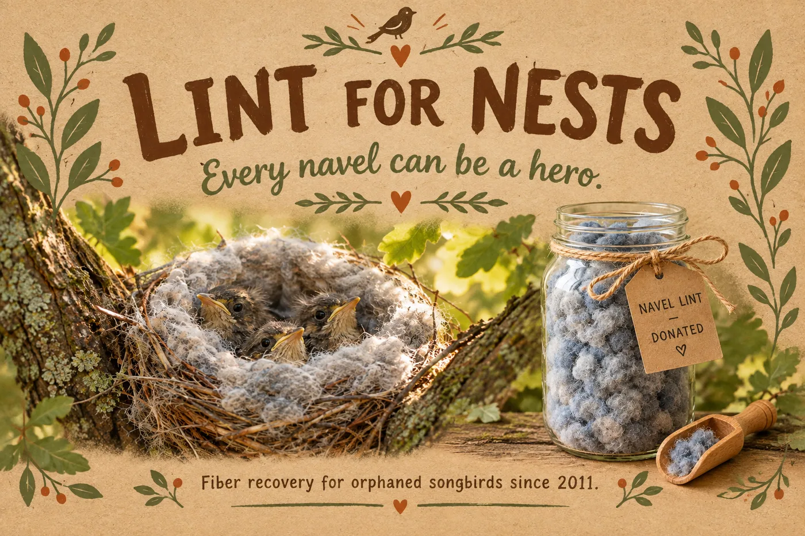
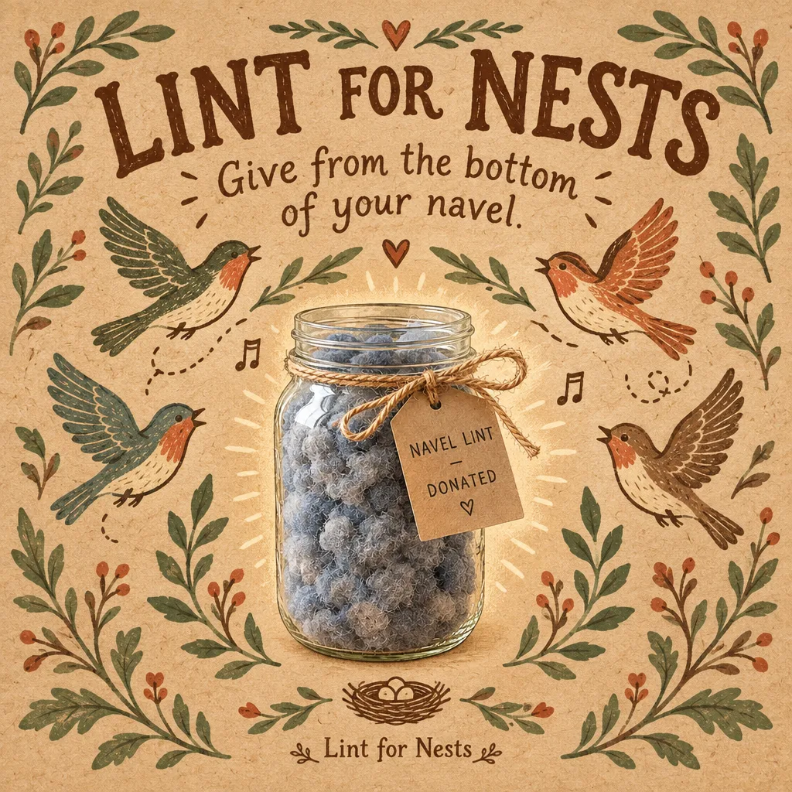
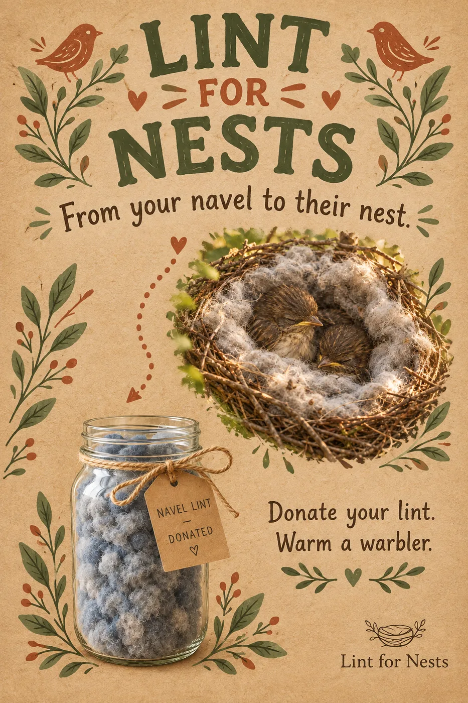

Spread the word, not the lint
Marketing Materials
Official campaign posters from our awareness committee. Congregations, laundromats, and break rooms are welcome to print and display them. Tap any poster to view it up close.


